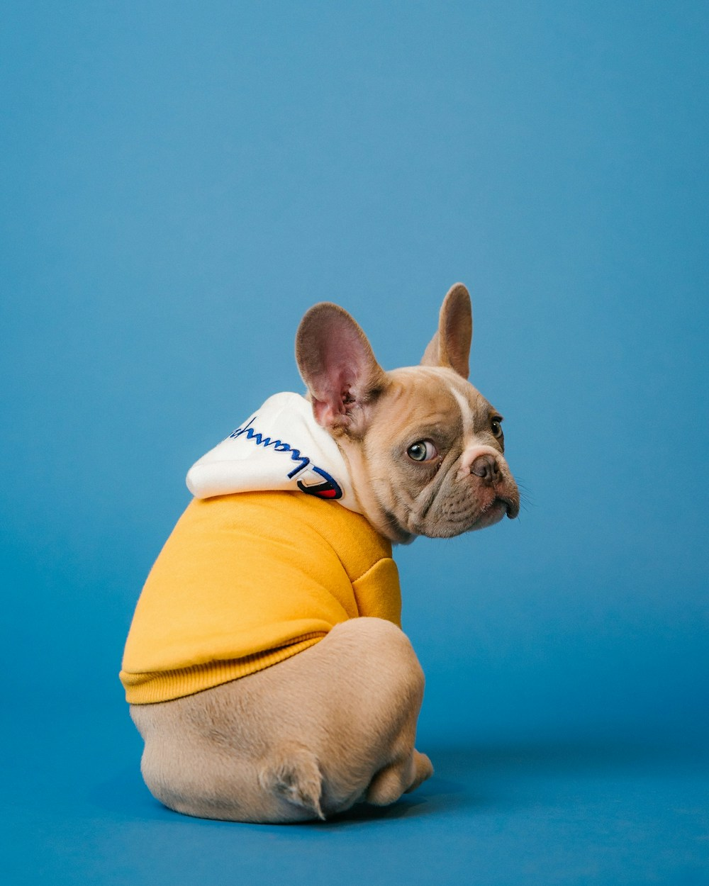

Ciągnięcie na smyczy to jedno z najczęstszych wyzwań, z jakimi zgłaszają się do nas opiekunowie psów. Dobra wiadomość jest taka, że spokojny spacer bez napiętej linki nie wymaga szarpania ani awersji – kluczem jest konsekwencja i odpowiednie wyposażenie.
Dlaczego psy ciągną na smyczy?
Naturalne tempo chodu człowieka jest znacznie wolniejsze niż trucht psa, a otoczenie pełne zapachów działa jak fascynująca gazeta, którą pupil chce przeczytać jak najszybciej. Jeśli pies odkryje, że napięcie smyczy pozwala mu dotrzeć do drzewa lub innego czworonoga, zachowanie to utrwala się błyskawicznie.
„Luźna smycz nie jest efektem zakazów, lecz relacji – pies wybiera kontakt z opiekunem wtedy, gdy obecność człowieka kojarzy mu się z bezpieczeństwem i współpracą.”
Trzy kroki do spokojnego spaceru
Zanim wyjdziesz na ruchliwą ulicę, przećwicz podstawy w spokojnym miejscu, gdzie liczba rozproszeń jest niewielka:
- Zatrzymuj się, gdy smycz się napina: pies uczy się, że napięta linka wstrzymuje marsz, a poluzowanie oznacza dalszą drogę.
- Nagradzaj kontakt wzrokowy: każde spojrzenie psa w Twoją stronę podczas ruchu nagradzaj pochwałą i smakołykiem podawanym przy nodze.
- Zadbaj o odpowiednią długość smyczy: smycz miejska 1,5 m sprawdzi się przy przejściu przez jezdnię, ale na spacerze w parku lepiej wybrać smycz przepinaną 3 m.
Dobór sprzętu a komfort psa
Podczas nauki chodzenia na luźnej smyczy ogromne znaczenie ma rozkład nacisku na ciało psa. Poniższe zestawienie pomoże dopasować akcesoria do etapu treningu:
| Rodzaj akcesorium | Zalecana długość / krój | Zastosowanie |
|---|---|---|
| Szelki Guard Pro | Pełna regulacja w 4 punktach | Codzienne spacery i nauka luźnej smyczy bez ucisku tchawicy |
| Smycz przepinana | 2,5 m – 3,0 m | Swobodna eksploracja w parku i trening przywołania |
| Smycz miejska | 1,5 m | Krótkie przejścia chodnikiem i komunikacja miejska |

Metoda zatrzymywania się przy napiętej smyczy zadziałała u naszego rocznego labradora już po tygodniu konsekwentnych spacerów. Świetny artykuł!